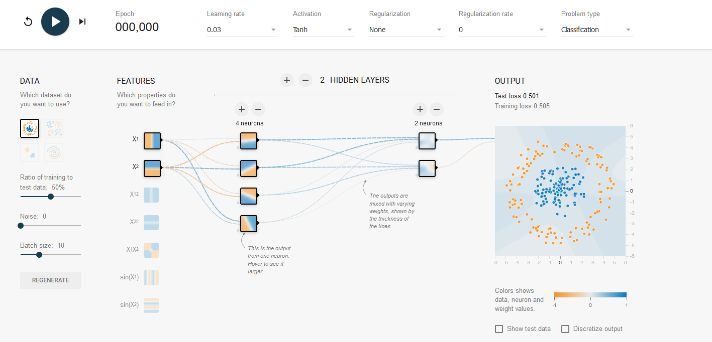

2 - Neural Networks
TipLearning Objectives
After this lecture you should be able to:
- Explain the relationship between linear models and multilayer perceptrons.
- Describe why activation functions enable non-linear function approximation.
- Interpret the role of depth vs width (efficiency of representation, hierarchical features).
- Implement and configure simple MLP architectures in PyTorch.
TipTLDR Recap
From Linear to Non-Linear:
- Linear models: \(f(\mathbf{x}) = \mathbf{W}\mathbf{x} + \mathbf{b}\) (limited to linear decision boundaries)
- Neural networks add activation functions (ReLU, sigmoid, tanh) enabling non-linear mappings
- Without activation functions, multiple layers collapse to a single linear transformation
Key Concepts:
- Layers: Input → Hidden (intermediate computations) → Output
- Activation Functions: ReLU most common (\(\max(0,x)\)), enables modeling complex patterns
- Universal Approximation: Shallow networks can approximate any continuous function (theoretically)
- Depth vs Width: Deep networks more efficient than wide shallow ones for complex functions
Why Deep Learning Works:
- Hierarchical Features: Early layers learn simple patterns (edges, colors) → deeper layers learn complex concepts (objects, faces)
- Efficiency: Adding depth requires fewer neurons than increasing width
- Biological Inspiration: Mimics hierarchical processing in visual cortex
Architecture Components:
- Multilayer Perceptron (MLP): Fully connected layers with activation functions
- Parameters: Weights \(\mathbf{W}\) and biases \(\mathbf{b}\) learned via optimization (backpropagation)
- Example: 784 → 128 → 10 network has ~102K parameters (784×128 + 128×10 + biases)
Practical Implementation (PyTorch):
model = nn.Sequential(
nn.Flatten(),
nn.Linear(784, 128),
nn.ReLU(),
nn.Linear(128, 10)
)Key Takeaway: Neural networks transform inputs through learned hierarchical representations, with activation functions enabling the non-linearity needed to solve complex real-world problems.
1 Biological Neural Networks
A biological neural network is a part of the nervous system and consists of interconnected neurons. A neuron is connected to other neurons via dendrites (these are “weighted” input signals) and via the axon (output signal) (see Figure 1). If the input signals exceed a certain threshold, the neuron “fires” and sends a signal through the axon, which then serves as an input signal for other neurons. Humans have about 86 billion neurons, each connected to about 1000 others on average (See Wikipedia).
Optical signals are processed, among other things, in the visual cortex (Figure 2). Signals are processed hierarchically, with the first layers recognizing simple patterns and later layers recognizing shapes and objects. See also the work of Hubel and Wiesel Hubel and Wiesel (1959).

The question that arises is:
Can we create artificial neural networks and reproduce the performance of biological neural networks?
2 Artificial Neural Networks
Artificial neural networks are models of biological networks. Such models were created and implemented technically as early as the 1940s.
Neural networks are often represented with a graph. The nodes are individual neurons in the network, and the edges are connections between the neurons (see Figure 3). The neurons are arranged in layers, with each neuron in a layer connected to every neuron in adjacent layers. The input layer represents the data, the output layer the (observable) outputs, and the hidden layers are within the network. The connections between the neurons are weighted.

3 From Linear Models to Neural Networks
In the following, we will describe neural networks mathematically. We start with a linear model. A linear model has the following form (see Equation 1):
\[ f(\mathbf{x}^{(i)}) = \mathbf{W} \mathbf{x}^{(i)} + \mathbf{b} \tag{1}\]
With the following elements:
- The \(i\)-th data point \(\mathbf{x}^{(i)}\) is a \(p\)-dimensional vector: \(\in \mathbb{R}^{p \times 1}\)
- Model weights \(\mathbf{W} \in \mathbb{R}^{k \times p}\) linearily project the data point to \(k\) dimensions.
- A bias term \(\mathbf{b} \in \mathbb{R}^{k \times 1}\) is added to the result.
\(f(\mathbf{x}^{(i)})\) is thus \(\in \mathbb{R}^{k \times 1}\).
The following parameters must be learned from training data using an optimization method: \(\mathbf{W}\) and \(\mathbf{b}\).
In neural networks, the linear model is extended with additional layers. Equation 2 defines a neural network with two layers (one hidden layer \(\mathbf{W}^{(1)}, \mathbf{b}^{(1)}\) and one output layer \(\mathbf{W}^{(2)}, \mathbf{b}^{(2)}\)).
\[ f(\mathbf{x}^{(i)}) = \mathbf{W}^{(2)} g\big(\mathbf{W}^{(1)} \mathbf{x}^{(i)} + \mathbf{b}^{(1)} \big) + \mathbf{b}^{(2)} \tag{2}\]
Where \(g()\) is an activation function, such as the ReLU function shown in Equation 3. Only due to activation functions non-linear relationships can be modelled. Without activation functions, the model collapses to a simple linear model with one layer.
\[ \text{ReLU}(x) = \begin{cases} x, & \text{if } x \geq 0 \\ 0, & \text{if } x < 0 \end{cases} \tag{3}\]
Every layer between the input and output layer is called a hidden layer.
Typically, not just one data point is processed but a mini-batch of data, or even the entire dataset. The data points are arranged in a data matrix \(\mathbf{X} \in \mathbb{R}^{n \times p}\). The linear model from Equation 1 can be rewritten in matrix notation as shown in Equation 4.
\[ f( \mathbf{X}) = \mathbf{X} \mathbf{W}^T + \mathbf{b}^T \tag{4}\]
The bias term \(\mathbf{b}\) is broadcast (details here), so it can be added to each projected input.
3.1 Activation Functions
The following code shows how activation functions are important for modeling non-linear relationships. The model has a hidden layer with several neurons but (left) no activation function and (right) with ReLU activation.
Figure 5 now shows a neural network including activation functions (ReLU). Sometimes the biases are also shown as nodes that feed into the next layer.

NoteActivation Function Cheat Sheet
Common choices:
- ReLU: \(\max(0, x)\) (sparse activations, mitigates vanishing gradients).
- LeakyReLU / GELU: Smoother or with negative slope; GELU often used in transformers.
- Sigmoid: Saturates; mainly for probabilities/logits output.
- Tanh: Zero-centered but still saturates; rarely preferred over ReLU-family now.
- Softplus / Mish / Swish: Smooth alternatives; sometimes modest gains, higher compute.
Guideline: Start with ReLU (or GELU for transformer-like blocks); change only if you have empirical evidence.
3.2 Universal Approximation Theorem
With a shallow neural network, any continuous function can be modeled with arbitrary accuracy (Universal Approximation Theorem). The following graphic illustrates that as the number of linear functions (and thus piecewise linear regions) increases, the approximation of the underlying function becomes more accurate.
Neural networks are therefore a particularly powerful class of models!
TipRefresh your neural network know-how!
4 Deep Learning
Using neural networks with multiple hidden layers is refered to as deep learning. Figure 7 illustrates such a model with 5 hidden layers and ReLU activation functions. Such a neural network is also called a multilayer perceptron (MLP) or a fully connected neural network or a network with dense layers. It consists of linear layers and activation functions.

Although shallow neural networks can theoretically model arbitrarily complex functions, the number of neurons required is often impractical. It can be shown that adding hidden layers (increasing the depth of a network) is much more efficient (requires fewer neurons) for modeling complex functions.
In practice, it has been shown that the first layers in a network learn simple features. These are combined in deeper layers to learn and detect increasingly abstract concepts. This is well illustrated with images. When a neural network is applied to images, the first layers learn to detect simple features, such as edges and colors. Further layers then detect shapes and objects, leading to specific items or people (see Figure 8).
Tip
Train Neural Networks in your Browser!
To directly observe the functioning of a neural network and try out the influence of various configurations, you can train networks directly in the browser using the following link: TensorFlow Playground.

5 Implementation in PyTorch
The following code shows how we can implement a configurable neural network.
import torch
import torch.nn as nn
import torch.nn.functional as F
class MLP(nn.Module):
def __init__(self, input_size, hidden_layer_sizes, num_outputs):
super().__init__()
# Initialize submodules of your module - typically layers
# that your module needs - these can then be used in the
# forward pass
self.flatten = nn.Flatten()
# a ModuleList allows you to flexibly chain submodules
# in a list - depending e.g. on configuration parameters
self.hidden_layers = nn.ModuleList()
last_size = input_size
for size in hidden_layer_sizes:
self.hidden_layers.append(nn.Linear(last_size, size))
last_size = size
self.output_layer = nn.Linear(last_size, num_outputs)
def forward(self, x):
"""The forward pass of your module."""
x = self.flatten(x)
for layer in self.hidden_layers:
x = F.relu(layer(x))
x = self.output_layer(x)
return x
# Example usage:
# Initialize the model with input size 784, one hidden layer of size 128, and 10 output units.
model = MLP(784, [128], 10)
# Example input vector (batch size of 32, input size of 784)
x = torch.randn(32, 784)
# Forward pass
output = model(x)We can easily display the architecture details with torchinfo
# Display the model architecture
from torchinfo import summary
summary(model, input_size=(32, 784))==========================================================================================
Layer (type:depth-idx) Output Shape Param #
==========================================================================================
MLP [32, 10] --
├─Flatten: 1-1 [32, 784] --
├─ModuleList: 1-2 -- --
│ └─Linear: 2-1 [32, 128] 100,480
├─Linear: 1-3 [32, 10] 1,290
==========================================================================================
Total params: 101,770
Trainable params: 101,770
Non-trainable params: 0
Total mult-adds (Units.MEGABYTES): 3.26
==========================================================================================
Input size (MB): 0.10
Forward/backward pass size (MB): 0.04
Params size (MB): 0.41
Estimated Total Size (MB): 0.54
==========================================================================================Question
How many parameters does this neural network have, and why?
Answer
Based on the torchinfo summary output above, the network has:
Layer 1: 784 inputs × 128 hidden units + 128 biases = 100,480 parameters
Layer 2: 128 inputs × 10 outputs + 10 biases = 1,290 parameters
Total: 101,770 parameters
Each fully connected layer has: - Weight matrix of size (input_dim × output_dim) - Bias vector of size (output_dim)
This is why the number of parameters grows quickly with network size!
6 References
Hubel, D. H., and T. N. Wiesel. 1959. “Receptive Fields of Single Neurones in the Cat’s Striate Cortex.” The Journal of Physiology 148 (3): 574–91. https://doi.org/10.1113/jphysiol.1959.sp006308.
Johnson, Justin. 2022. “EECS 498.008 / 598.008 Deep Learning for Computer Vision.” Lecture {Notes} / {Slides}. https://web.eecs.umich.edu/~justincj/teaching/eecs498/WI2022/.
Kubilius, Jonas. 2017. “Ventral Visual Stream.” https://figshare.com/articles/figure/Ventral_visual_stream/106794.
Lee, Honglak, Roger Grosse, Rajesh Ranganath, and Andrew Y. Ng. 2011. “Unsupervised Learning of Hierarchical Representations with Convolutional Deep Belief Networks.” Communications of the ACM 54 (10): 95–103. https://doi.org/10.1145/2001269.2001295.
Li, Fei-Fei. 2022. “CS231n Convolutional Neural Networks for Visual Recognition.” Lecture {Notes}. https://cs231n.github.io.
Phillips, Devin K. 2015. “Speed of the Human Brain.” Ask A Biologist, May. https://askabiologist.asu.edu/plosable/speed-human-brain.
Prince, Simon J. D. 2023. Understanding Deep Learning. MIT Press. https://udlbook.github.io/udlbook/.